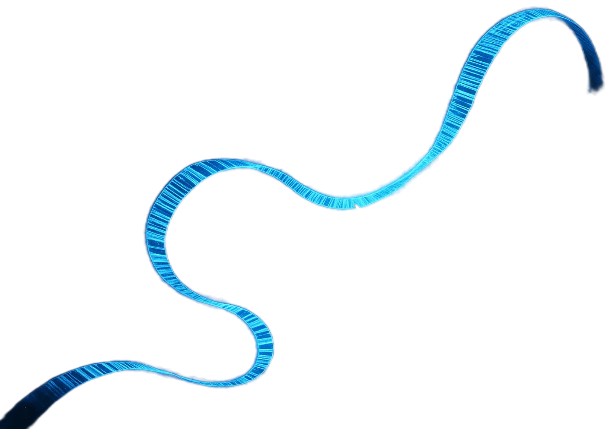
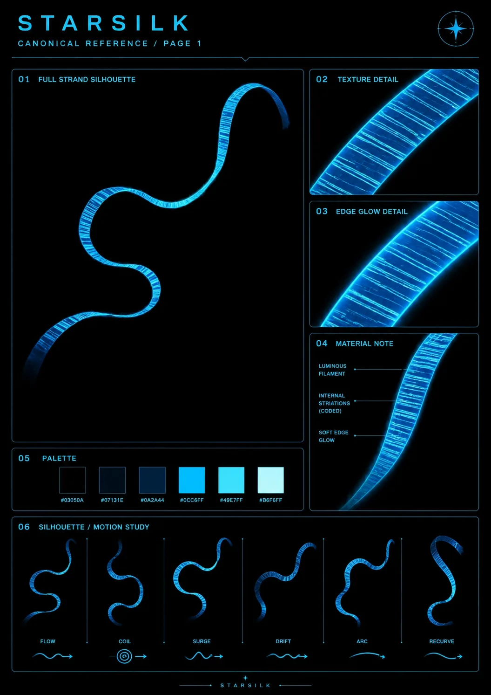
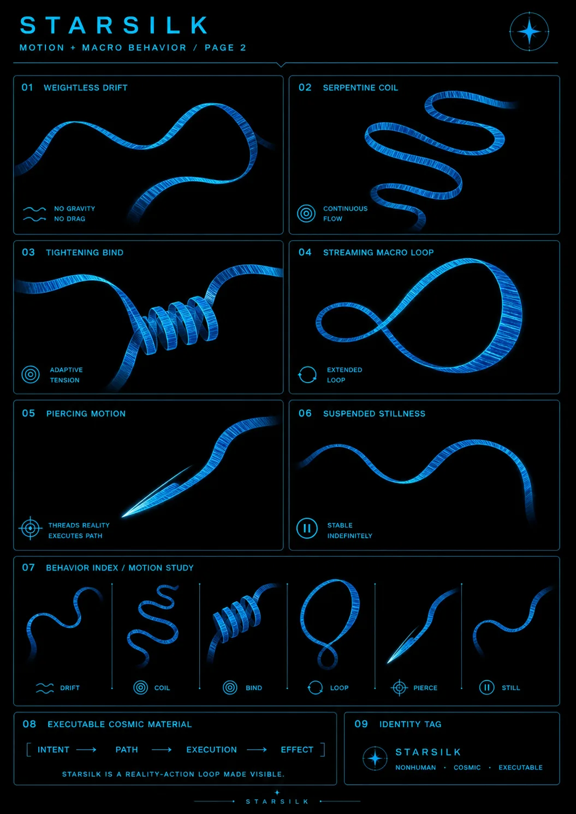
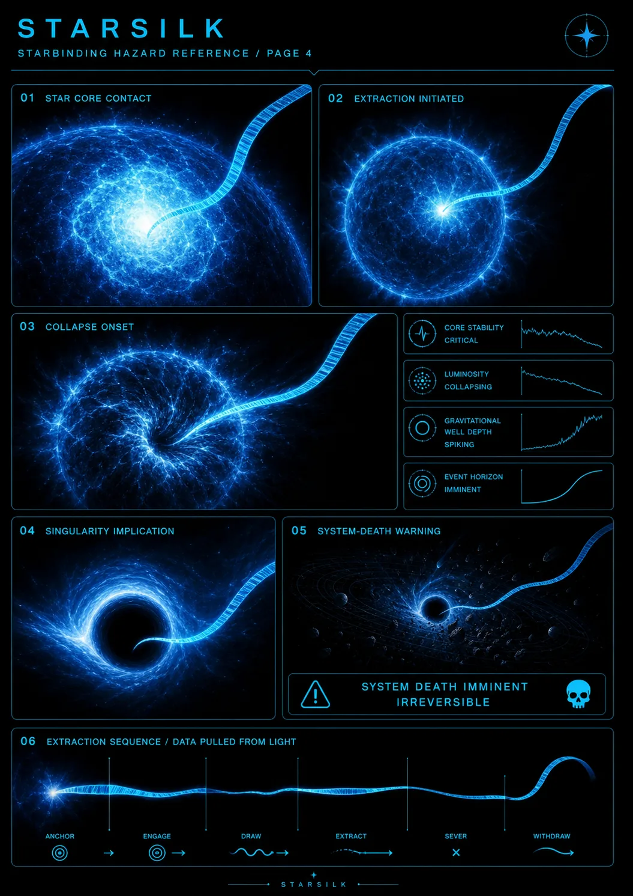

Stable Compendium record
starsilk-material
Material dossier
Starsilk
A programmable cosmological substance whose visible strand grammar is luminous, coded, flexible and executable. It is infrastructure, not a character and not a consciousness.
- Stable ID
starsilk-material- Structural type
- material-section
- Canon status
- unknown
- Spoiler level
- major
Published source content
Canonical nature
- Literal programmable cosmological substance and medium for repeatable reality Macros.
- Macros are repeatable action-loops embedded into the universe, not metaphorical magic.
- Starsilk itself is not sentient or sapient.
- Death remains final. Stars, starlight and Starsilk may retain data, residue or structural memory without preserving ongoing conscious afterlife.
Visible material law
- Long ribbon/filament silhouette, capable of flow, coil, surge, drift, arc and recurve.
- Luminous cyan/azure edges with darker blue interior body.
- Dense fine internal striations read as coded structure rather than fabric weave.
- Soft edge glow; deep black/void presentation makes the material legible.
#03050A#07131E#0A2A44#0CC6FF#49E7FF#B6F6FF
Motion + macro behavior
- Weightless drift without ordinary drag.
- Serpentine continuous flow and adaptive tightening binds.
- Streaming loops may extend and remain stable indefinitely while the macro state persists.
- Piercing motion represents an executable path, not a conventional blade by default.
- Behavior grammar: intent → path → execution → effect.
Star-dive hazard
- Anchor to stellar target.
- Engage the star core.
- Draw and extract Starsilk.
- Sever and withdraw.
- The star immediately loses stability and collapses toward a black hole, destroying the system.
The Starbinding releases this logic across billions of successful star dives at once.




